Home / Past papers / MLT End Term / this paper
Machine Learning Techniques 06 May 26 - 10 May 2026
Elapsed 00:00
Consider a dataset for a binary classification problem with five features, each of which is binary. If we go for a generative model that satisfies the class-conditional independence assumption, then how many free parameters do we need to learn?
Consider a regression problem in which we use a neural network with the following architecture: Input layer has  neurons• Two hidden layers, each with
neurons• Two hidden layers, each with  neurons• Output layer with one neuron• Find the total number of parameters in the network. Ignore the biases.
neurons• Output layer with one neuron• Find the total number of parameters in the network. Ignore the biases.
neurons• Two hidden layers, each with neurons• Output layer with one neuron• Find the total number of parameters in the network. Ignore the biases.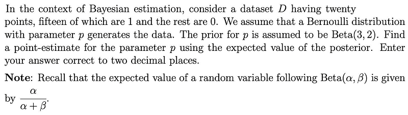
In the context of bagging, consider a dataset of size  . A bag is a set of points that is obtained by sampling uniformly at random from the dataset with replacement. Which of the following represents the probability that a data-point
. A bag is a set of points that is obtained by sampling uniformly at random from the dataset with replacement. Which of the following represents the probability that a data-point  is not a part of the bag?
is not a part of the bag?
. A bag is a set of points that is obtained by sampling uniformly at random from the dataset with replacement. Which of the following represents the probability that a data-point is not a part of the bag?


Consider a dataset for a binary classification problem with features in  as shown in the figure. The red points belong to class
as shown in the figure. The red points belong to class  while the green points belong to class
while the green points belong to class  . Which of the following classifiers is the most appropriate choice?
. Which of the following classifiers is the most appropriate choice?

as shown in the figure. The red points belong to class while the green points belong to class . Which of the following classifiers is the most appropriate choice?
- Hard-margin, Linear SVM
- Hard-margin, Kernel SVM, with a suitable kernel
- Soft-margin, Linear SVM
- Soft-margin, Kernel SVM, with a suitable kernel
Comprehension passage - the questions below it refer to this
Consider a soft-margin SVM that has been trained on a dataset with 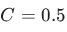
, where is the hyperparamter that controls the tradeoff between the margin and the hinge loss. Let
is the hyperparamter that controls the tradeoff between the margin and the hinge loss. Let  be the optimal weight vector. Consider a data-point
be the optimal weight vector. Consider a data-point 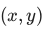
in the dataset for which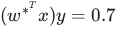
.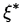
is the slack corresponding to this point and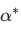
is the multiplier corresponding to the primal constraint for this point. Based on the above data, answer the given subquestions.Find the value of
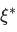
. Enter your answer correct to one decimal place.Find the value of . Enter your answer correct to one decimal place.
Consider a polynomial kernel,  of degree
of degree  . Let
. Let  . Which of the following is/are true?
. Which of the following is/are true?
of degree . Let . Which of the following is/are true?- If is an even number, then
 for all .
for all . - If
 and
and  are orthogonal, then
are orthogonal, then  .
.  can never be zero.
can never be zero. for all .
for all .
Two loss functions are plotted in this graph. What are the two?

- Logistic loss
- Hinge loss
- Squared loss
- 0-1 loss
Let be the covariance matrix of a centered dataset with data-points in  , where
, where  is the data-matrix of shape
is the data-matrix of shape  . Let
. Let  be the
be the  principal component. Which of the following is/are true?
principal component. Which of the following is/are true?
be the covariance matrix of a centered dataset with data-points in , where is the data-matrix of shape . Let be the principal component. Which of the following is/are true? is the variance of the dataset along
is the variance of the dataset along 
 , for
, for 
 for each
for each  satisfying
satisfying 
Consider the following decision tree for a binary classification problem with features in and labels in  .
.
 If
If  denotes the set of all points in for which the decision tree outputs
denotes the set of all points in for which the decision tree outputs  as the predicted label, find the area corresponding to the region . Enter the nearest integer as your answer.
as the predicted label, find the area corresponding to the region . Enter the nearest integer as your answer.
and labels in .
If denotes the set of all points in for which the decision tree outputs as the predicted label, find the area corresponding to the region . Enter the nearest integer as your answer.Consider a logistic regression classifier trained on a dataset for a binary classification problem with features in  and labels in
and labels in  . The weight vector learnt by the classifier is
. The weight vector learnt by the classifier is  . Given a test data-point
. Given a test data-point  , the probability
, the probability
 , where
, where  is the base of the natural logarithm. Find the value of
is the base of the natural logarithm. Find the value of  and enter the nearest integer as your answer.
and enter the nearest integer as your answer.
and labels in . The weight vector learnt by the classifier is . Given a test data-point , the probability
, where is the base of the natural logarithm. Find the value of and enter the nearest integer as your answer.Comprehension passage - the questions below it refer to this
Consider a linearly separable dataset,  , for a binary classification problem with features in and labels in
, for a binary classification problem with features in and labels in 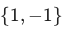
that has a positive margin. has ten data-points out of which five of them belong to the class . Assume that all ten data-points occupy distinct locations in . Let 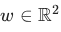
be the optimal weight vector output by a hard-margin SVM. Consider three subsets of as given below:
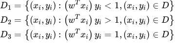
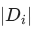
denotes the cardinality of the set. Note that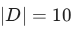
. Answer the given sub-questions.What is as the answer.
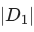
? If you cannot compute this value with the given information, enter as the answer.What is as the answer.
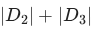
? If you cannot compute this value with the given information, enter as the answer.Which of the following is/are true?
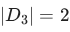
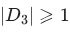
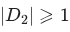
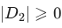
Consider a dataset with two data-points for a binary classification problem with features in .  is a data-point from the positive class while
is a data-point from the positive class while  is from the negative class. We now consider three linear classifiers: perceptron, logistic regression and SVM.
is from the negative class. We now consider three linear classifiers: perceptron, logistic regression and SVM.
 If
If  is the weight vector with the largest margin, which of the following is true?
is the weight vector with the largest margin, which of the following is true?

. is a data-point from the positive class while is from the negative class. We now consider three linear classifiers: perceptron, logistic regression and SVM.
If is the weight vector with the largest margin, which of the following is true?
- All three classifiers output
- Only SVM outputs
- Only SVM and perceptron output
- Only perceptron and logistic regression output
Consider a dataset consisting of datapoints  , where each
, where each  . Let the four features be denoted by
. Let the four features be denoted by  and
and  .Suppose the features satisfy the following linear relationship:
.Suppose the features satisfy the following linear relationship:  That is, one of the features is an exact linear combination of others. A linear regression model is trained to predict a target variable using these features. Consider the following statements: Consider the following statements: Which of the following is (are) true?
That is, one of the features is an exact linear combination of others. A linear regression model is trained to predict a target variable using these features. Consider the following statements: Consider the following statements: Which of the following is (are) true?
datapoints , where each . Let the four features be denoted by and .Suppose the features satisfy the following linear relationship: That is, one of the features is an exact linear combination of others. A linear regression model is trained to predict a target variable using these features. Consider the following statements: Consider the following statements: Which of the following is (are) true?- Linear regression without regularization will achieve training MSE less than or equal to that of ridge regression.
- The solution for linear regression without regularization may not be unique.
- Ridge regression (L2 regularization) will always set at least one coefficient exactly to zero.
- Lasso regression (L1 regularization) can force some feature weights to become exactly zero.
Answer key
- Q1 (SA, 3 marks): 11
- Q2 (SA, 3 marks): 1230
- Q3 (SA, 3 marks): 0.71 to 0.73
- Q4 (MCQ, 3 marks): C
- Q5 (MCQ, 3 marks): D
- Q6 (SA, 2 marks): 0.3
- Q7 (SA, 2 marks): 0.5
- Q8 (MSQ, 3 marks): A, D
- Q9 (MSQ, 3 marks): A, B
- Q10 (MSQ, 3 marks): A, C
- Q11 (SA, 4 marks): 10
- Q12 (SA, 4 marks): 2
- Q13 (SA, 2 marks): 0
- Q14 (SA, 2 marks): 10
- Q15 (MSQ, 2 marks): B, D
- Q16 (MCQ, 4 marks): A
- Q17 (MSQ, 4 marks): A, B, D